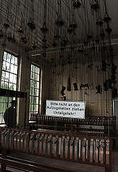
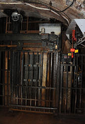
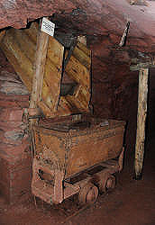

Grube Fortuna
Touristische Informationen:
| Ort: |
Grube Fortuna 1, 35606 Solms-Oberbiel.
Nördlich von Solms-Oberbiel bei Wetzlar. B227 zwischen Werrdorf und Aßlar, Abzweig nach Berghaus, am Ortseingang links, 1,5 km zum Bergwerk. (50.575002, 8.424038) |
| Öffnungszeiten: |
APR bis OKT Mi-So, Fei 10-17. Online-Reservierung obligatorisch. [2022] |
| Eintrittspreise: |
Erwachsene EUR 12, Kinder (6-16) EUR 7, Auszubildende EUR 11, Studenten EUR 11, Schwerbehinderte EUR 11. Gruppen: Erwachsene EUR 11, Kinder (6-16) EUR 6. Expertentour: Erwachsene EUR 29. Eventtour: Erwachsene EUR 39. [2022] |
| Typ: |
 Eisen Eisen
|
| Licht: |
 Beleuchtung mit Glühlampen Beleuchtung mit Glühlampen
|
| Dimension: | T=13 °C. |
| Führungen: |
D=60 min, MinAge=6. Expertentour: D=3 h, MinAge=14, Max=12. Eventtour: D=4 h, MinAge=14, Max=10. |
| Fotografieren: | erlaubt |
| Zugänglichkeit: | nein |
| Literatur: |
Hansjoachim Lippert (1952):
Das Roteisenstein-Grenzlager von der Wende Mittel-Oberdevon in der Dill-Mulde
Beobachtungen und Gedanken zur Entstehung von Erz und Nebengestein. In: Zeitschrift der Deutschen Geologischen Gesellschaft. Bd. 104, 1952, ISSN 0012-0189, S. 260–276. Hansjoachim Lippert (1953): Aus dem Roteisenstein-Bergbau an Lahn und Dill In: Zeitschrift der Deutschen Gesellschaft für Geowissenschaften. Bd. 105, 1953, S. 20–24. Lapis Red. (1984): Lapis Aktuell: Besucherbergwerk Grube Fortuna bei Wetzlar Lapis, Jg.9, Nr.7, S.5. Karsten Porezag (1987): Bergbaustadt Wetzlar Wetzlardruck GmbH, Wetzlar 1987, ISBN 3-926617-00-4 Tim Schönwetter (2018): Die Grube Fortuna – Denkmal des hessischen Eisenerzbergbaus In: Zeitschrift Industriekultur 1.2018, S. 16–19. |
| Adresse: |
Geowelt Fortuna e. V., Besucherbergwerk, Grube Fortuna, Grube Fortuna 1, 35606 Solms-Oberbiel, Telefon: +49-6443-8246-0.
E-mail: |
| Nach unserem Wissen sind die Angaben für das in eckigen Klammern angegebene Jahr korrekt. Allerdings können sich Öffnungszeiten und Preise schnell ändern, ohne daß wir benachrichtigt werden. Bitte prüfen Sie bei Bedarf die aktuellen Werte beim Betreiber, zum Beispiel auf der offiziellen Website in der Linkliste. |
|
Geschichte
| 1847 | Erzvorkommen der Grube Fortuna erstmals in den Bergamtsakten erwähnt. |
| 1849 | Grubenfeld an den Fürsten Ferdinand zu Solms-Braunfels verliehen. |
| 1878 | 3,6 km lange Seilbahn zum Hochofenwerk Georgshütte in Burgsolms eröffnet. |
| 1900 | erster Schacht abgeteuft. |
| 1906 | Fürst verkauft die Grube Fortuna und alle weiteren Gruben, darunter auch die Grube Ferdinand, an die Firma Friedrich Krupp, Essen. |
| 1907 | Maschinenschacht II 150 m abgeteuft. |
| 1908 | zweite Seilbahn von der Kipphalle zum Bahnhof Albshausen an der Lahntalbahn eröffnet. |
| 1908 und 1915 | Neuer Tiefer Stollen aufgefahren. |
| 1953 | Harz Lahn Erzbergbau AG übernimmt den Bergwerksbetrieb. |
| 1962 | erste Stilllegung des Bergwerks. |
| 1963 | Betrieb wieder aufgenommen, da die Umstellung auf Auslandserze zu Problemen führte. |
| 1981 | Sophienhütte in Wetzlar als letztes Hochofenwerk in Hessen stillgelegt. |
| 1983 | stillgelegt. |
| 1987 | Besucherbergwerk eröffnet. |
| 1993 | Feld- und Grubenbahnmuseum Fortuna (FGF) eröffnet. |
Geologie
In diesem Eisenbergwerk wurden Roteisenstein (Hämatit) und Brauneisenstein (Limonit) abgebaut. Dabei handelt es sich um sehr ergiebige Erze mit einem Eisengehalt von 40 % bis 65 %. Außergewöhnlich ist das Vorkommen von Magenetit im Erz. Die Hauptvorkommen dieser Erze in Deutschland liegen im Lahn-Dill-Gebiet und im angrenzenden Siegerland. Es handelt sich dabei um Devonische Ablagerungen. Die Eisenerze in der Gegend führten zu einer großen Zahl von Gruben, die heute jedoch alle geschlossen sind.
Das Erz ist fast reines Eisenerz bestehend aus Hämatit, Limonit und sehr wenig Pyrit. Das Umgebungsgestein Dolomit und Kalkstein, so daß es auch zur Bildung von Kalzitkristallen kam. Daneben findet man auch ein bisschen Baryt und Quarz, beides jedoch wirtschaftlich unerheblich.
Bemerkungen
Die Grube Fortuna war einst im Besitz von Krupp, als letzte Eisenerzgrube Hessens wurde sie 1983 geschlossen. In verschiedenen Sohlen wurde Brauneisenstein und Roteisenstein abgebaut. Ein Versuch den Abbau bereits 1962 einzustellen und billigeres Erz vom Weltmarkt zu verwenden schlug fehl, da die Umstellung zu Problemen führte. Nach nur einem Jahr wurde der Abbau wieder aufgenommen und ging noch zwei Jahrzehnte weiter.
Die Führung durch die Grube beginnt mit einem Film. Danach folgt eine 45 minütige Tour untertage. Das Bergwerk wird durch den Neuen Tiefen Stollen betreten, der zwischen 1908 und 1915 aufgefahren wurde. Nach kurzer Wanderung erreicht man den Maschinenschacht, durch den man auf die 150 m Sohle hinunterfährt. Eine 450 m lange Strecke wird mit einer Grubenbahn befahren und führt zu einem unterirdischen Rundgang. Es wird der Ausbau mit Holz ebenso vorgestellt wie druckluftbetriebene Bohrmaschinen.
Das abgebaute Erz wurde mit gleisgebundenen Wurfschaufelladern oder mit gleislosen Rucksackladern abtransportiert. Die Grubenbahn transportierte das Erz zum Schacht, dann den Tiefen Stollen hinaus und über die Straße Berghausen-Oberbiel um sie auf der sogenannten Kipphalle abzuladen. Hier wurde das Erz in der Aufbereitung vorverarbeitet und dann mit einer Seilbahn zum Bahnhof Albshausen an der Lahntalbahn oder mit einer weiteren Seilbahn zur Georgshütte in Burgsolms gebracht.
Die normale Führung im Bergwerk ist insofern ungewöhnlich, als sie sowohl eine Seilfahrt im Aufzug als auch eine Fahrt mit der Grubenbahn beinhaltet. Das ist wohl in Deutschland einmalig, die anderen bieten maximal eines davon. Dennoch ist die Tour sehr leicht, man muss nicht einmal Treppen steigen, auch wenn die Tour nicht offiziell als behindertengerecht angegeben ist. Das Mindestalter von 6 Jahren ist wohl auf diese beiden Fahrten zurückzuführen. Neben diesen regulären Führungen werden Sonderführungen angeboten. Hier ist das Mindestalter 14, es gibt kein Licht, die Tour dauert mehrere Stunden und man muss Treppen steigen, durch Dreck watern und eventuell sogar mal eine Leiter steigen. Der Bergmann spricht bei all diesen Fortbewegungsarten von fahren. Die drei Stunden Tour wird auch Expertentour genannt, obwohl sie nicht erklären, ob man Experte sein muss oder durch die Tour zum Experten wird. Die vier Stunden Tour heißt Eventtour, und damit ist wohl gemeint, dass man die 150 Höhenmeter von der Sohle des Schaubergwerks über Fahrten (Leitern) bis an die Oberfläche hichsteigen muss. Event ist wohl das Synonym für anstrengend. Definitiv lohnend sind beide Sonderführungen, man sieht das Magnetitlager und alte, hallenartige Abbaue. Alle Führungen müssen, wohl Corona-bedingt, online gebucht werden. Als Ergebnis gibt es keine Öffnungszeiten mehr, man sucht sich im Kalender eine Führung die nicht ausgebucht ist und kauft.
Das Schaubergwerk wurde vom Förderverein Besucherbergwerk Fortuna e.V. aufgebaut. Nach der Eröffnung wurde der Lahn-Dill-Kreis Träger des Besucherbergwerks. Der Verein baut seither ein zweites Museum auf, das Feld- und Grubenbahnmuseum Fortuna auf dem ehemaligen Zechengelände der Grube Fortuna. Es umfasste 2007 über 50 Lokomotiven und über 100 Wagen, die an jährlich etwa zehn Fahrtagen auf einer 2,5 km langen Strecke mit Waldabschnitt und Steigungsstrecke vorgeführt werden. Auch ohne die Vorführung ist das Museum eine ideale Ergänzung zu einem Besuch des Schaubergwerks.
|

Die Arbeitskleidung wird an Ketten zur Decke hochgezogen. |

Dieser Aufzug bringt die Besucher hinunter auf die 150 m Sohle. |

Befüllung von Loren mit Schütten. |
- Siehe auch
 Auf Google nach "Grube Fortuna" suchen...
Auf Google nach "Grube Fortuna" suchen... Google Earth Placemark
Google Earth Placemark Grube Fortuna (Solms) - Wikipedia (visited: 14-OCT-2022)
Grube Fortuna (Solms) - Wikipedia (visited: 14-OCT-2022) Grube Fortuna, offizielle Website (visited: 14-OCT-2022)
Grube Fortuna, offizielle Website (visited: 14-OCT-2022)- Feld- und Grubenbahnmuseum Fortuna (visited: 14-OCT-2022)
- Grube Fortuna - Mineralienatlas (visited: 14-OCT-2022)
- Fortuna Mine, Oberbiel, Solms - mindat.org
 (visited: 14-OCT-2022)
(visited: 14-OCT-2022) - Solms-Oberbiel, Besucherbergwerk Grube Fortuna (visited: 14-OCT-2022)
 Index
Index Themen
Themen Hierarchisch
Hierarchisch Länder
Länder Karten
Karten Suche
Suche{kind=link}
{kind=link}
{kind=link}
{kind=link}
{kind=link}
{kind=link}
{kind=link}
{kind=link}
{kind=link}